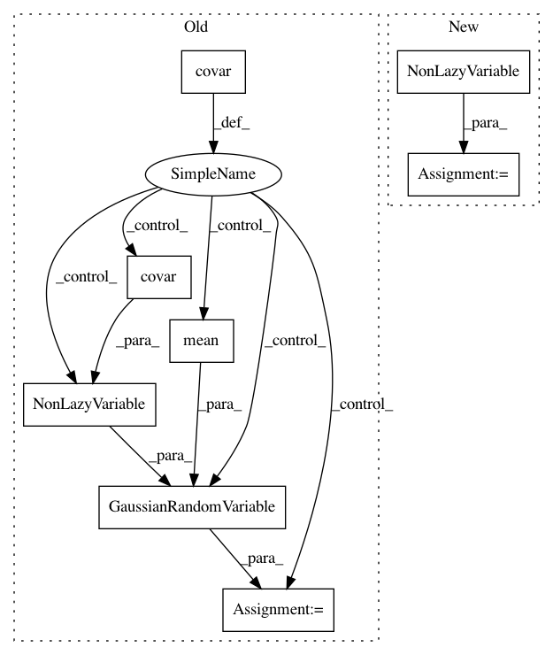

d9069391dc7dfe7cf383815a439f478917eafa63,gpytorch/mlls/exact_marginal_log_likelihood.py,ExactMarginalLogLikelihood,forward,#ExactMarginalLogLikelihood#Any#Any#,30
Before Change
super(ExactMarginalLogLikelihood, self).__init__(likelihood, model)
def forward(self, output, target):
if not isinstance(output.covar(), LazyVariable):
output = GaussianRandomVariable(
output.mean(), NonLazyVariable(output.covar())
)
mean, covar = self.likelihood(output).representation()
n_data = target.size(-1)
// Get log determininat and first part of quadratic form
After Change
prior_mean, prior_covar = output.representation()
prior_covar = prior_covar
if not isinstance(prior_covar, LazyVariable):
prior_covar = NonLazyVariable(prior_covar)
output = GaussianRandomVariable(prior_mean, prior_covar)
mean, covar = self.likelihood(output).representation()
n_data = target.size(-1)
In pattern: SUPERPATTERN
Frequency: 3
Non-data size: 8
Instances
Project Name: cornellius-gp/gpytorch
Commit Name: d9069391dc7dfe7cf383815a439f478917eafa63
Time: 2018-05-27
Author: jrg365@cornell.edu
File Name: gpytorch/mlls/exact_marginal_log_likelihood.py
Class Name: ExactMarginalLogLikelihood
Method Name: forward
Project Name: cornellius-gp/gpytorch
Commit Name: aeff3c66e2acfe1c48fe68a4f9e8023f1ea06cb7
Time: 2018-05-27
Author: jrg365@cornell.edu
File Name: gpytorch/mlls/exact_marginal_log_likelihood.py
Class Name: ExactMarginalLogLikelihood
Method Name: forward
Project Name: cornellius-gp/gpytorch
Commit Name: a037e45fa8fd3c471c53496c1fecd4e61f5391a5
Time: 2018-03-26
Author: jrg365@cornell.edu
File Name: gpytorch/mlls/exact_marginal_log_likelihood.py
Class Name: ExactMarginalLogLikelihood
Method Name: forward